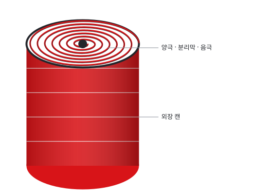
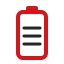
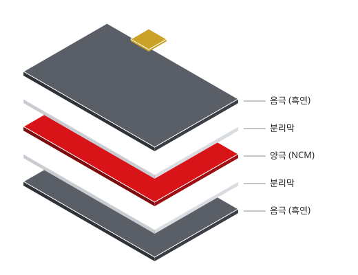
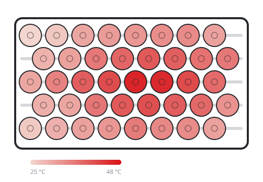
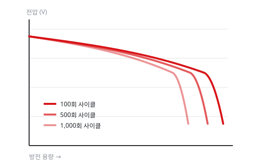

원통형 셀 장기 수명 평가
21700 규격 원통형 셀을 온도 조건별로 1,000회 이상 충방전하며 용량 감소 원인을 추적했습니다. 사이클 후 셀을 해체해 전극 표면 변화를 직접 관찰했습니다.
사랑의 배터리 연구대는 리튬이온 셀의 수명과 안전성을 높이기 위해 전극 소재부터 셀 설계, 배터리 관리 기술까지 연구합니다.

셀 안에서 일어나는 화학 반응부터 수백 개의 셀을 묶은 모듈까지, 배터리를 여러 규모에서 들여다봅니다.
고니켈 양극과 실리콘 복합 음극을 합성하고, 충방전을 반복할 때 구조가 어떻게 변하는지 분석합니다.

코인 셀부터 파우치 셀까지 직접 만들어, 전극 두께와 전해액 양이 성능에 주는 영향을 확인합니다.
전압, 전류, 온도 데이터로 충전 상태와 수명을 추정하는 알고리즘을 개발합니다.
모듈 내 온도 분포를 측정하고, 열폭주가 번지지 않도록 막는 냉각 구조와 소재를 시험합니다.
진행했거나 진행 중인 연구입니다.

21700 규격 원통형 셀을 온도 조건별로 1,000회 이상 충방전하며 용량 감소 원인을 추적했습니다. 사이클 후 셀을 해체해 전극 표면 변화를 직접 관찰했습니다.

전극과 분리막을 쌓는 순서와 정렬 오차가 초기 용량과 불량률에 주는 영향을 비교했습니다. 소량 시제 셀 제작 절차를 표준화했습니다.

40셀 모듈을 급속 충전하며 셀별 온도를 측정했습니다. 가운데 셀에 열이 몰리는 것을 확인하고 냉각판 유로를 다시 설계해 최고 온도를 낮췄습니다.

사이클마다 달라지는 방전 곡선의 모양으로 남은 수명을 예측하는 모델을 만들었습니다. 배터리 관리 시스템에 넣을 수 있도록 계산량을 줄였습니다.
소재 합성부터 셀 평가까지 연구대 안에서 진행할 수 있습니다.
| 장비 | 용도 |
|---|---|
| 다채널 충방전기 | 셀 용량, 수명, 출력 평가 |
| 아르곤 글러브박스 | 수분과 산소를 차단한 상태에서 셀 조립 |
| 전기화학 임피던스 분석기 | 셀 내부 저항과 계면 변화 측정 |
| 항온 챔버 | 저온과 고온 조건 시험 |
| 열화상 카메라 | 모듈과 셀의 표면 온도 분포 측정 |